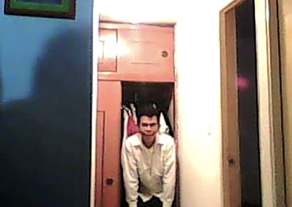
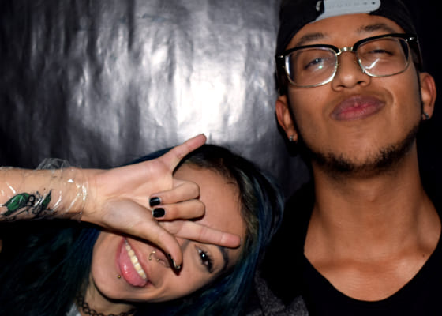
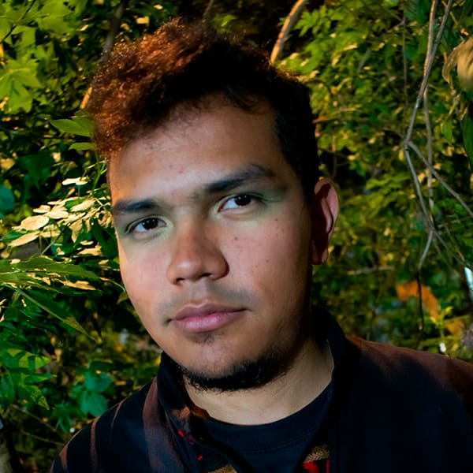

El definirse a uno mismo es un acto complejo y simplista al mismo tiempo. Simplemente soy alguien especialmente sensible, fascinado con el autodescubrimiento de mis propios sentimientos, y todo lo que estos abarcan y cómo se contactan con el mundo externo. Los universos y la transición entre ellos me ayudan a comprenderme y poder expresarme de manera más clara.
Me gusta jugar en mi vida, me gusta ver el mundo desde mi perspectiva y me gusta expresar dicha visión de sí misma
Si te interesa mi visión, mi historia, mi conexión y el nacimiento de la expresión artística que hago, aqui esta.
Los Inicios de la Locura
Todo este viaje empezó desde mi encuentro con la música, hacia los 13 años, descubrí el mundo del metal y empecé a adentrarme en todos sus derivados, comprendiendo cómo se concibe la música extrema y sus síntesis más eclécticas, donde poco a poco fui creciendo y desarrollando mi gusto por la música con alto contenido de propuesta y vanguardia, sin dejar de tener como columna vertebral los conceptos extremos, mientras crecía, descubri nuevos sonidos y nuevas tendencias musicales que me ampliaron el espectro sonoro, muy relacionadas al jazz, el noise y el trap, que en 2018 - 2019 alcanzaba su punto de fama, propuestas que me influenciaron enormemente de una escena nacida en soundcloud.

Hacer Música Sin Saber Nada De Música
Gracias a la exploración de tutoriales en youtube aprendí a manejar de manera muy amateur un daw como lo es reaper (el mejor de todos basicamente), y con este empecé a desarrollar maquetas muy sencillas para aprender cómo funcionaba el programa y sus plugins.
Estas pruebas, estos fallos y errores, esta falta de interpretación vocal, y sobre todo, el nulo conocimiento musical tanto teórico, como de producción, dio como origen mi primer demo/EP Llamado “Lógica De La Muerte”, inspirado en la oscuridad, la negatividad, el pesimismo y mi dualidad con mi yo interno que se manifestaba en un alter ego creado, en Zło básicamente.

Este Alter-Ego representa toda esa oscuridad y represión dada por mi entorno cercano y por mí mismo, por mi gusto por lo mórbido y lo desagradable en todos los aspectos humanos; dicho EP cuenta con 8 canciones exploratorias en un “trap” denso y oscuro, intentando salirme del esquema tradicional con mis limitados conocimientos y con la inocencia de una persona que acaba de empezar el viaje artístico.
Aquí aprovecho para agradecer a todas estas personas que me ayudaron y apoyaron en el inicio de mi carrera artística, con el único fin de ayudarme y darme el amor más puro, siendo estos Jean Paul, El Negro Yeison, Leidy Lyrics, Carlos CJ, Nicolas Fainaru y Camila Etherea.
Camino del aprendizaje, autodestrucción y autoconocimiento
Después de publicar “Lógica De La Muerte”, seguí indagando de manera autodidacta como podria mejorar mis procesos, dando como resultado varias maquetas sin publicar y 2 canciones que se publicaron momentáneamente, siendo “Yo, Labios De Asco” y “Call Of The Dark Moon”.
Sin embargo la responsabilidades sociales y económicas empiezan a llamar a la puerta, el tercer mundo te recuerda las prioridades, y me enfoque a trabajar, también empecé a estudiar de manera formal música.
Todo mi ser me fue conduciendo a realizar un proyecto más ambicioso, un álbum completo con un concepto, con influencias musicales más eclécticas, y llevando la expresión de mi mismo y de la vida que me rodea, más allá, donde al mismo tiempo empecé a desarrollar con unos excelentes amigos, una banda “Cassandra Bebop” (banda que nunca surgió más allá de unas ideas y composiciones sin completar).

Pero en el camino me olvidé de algo fundamental, saber quien soy yo mismo.
Durante muchos años lleve el peso de tener varios vacíos, donde negaba mi propia naturaleza y vivía en una dualidad constante, donde en cada espacio me recordaba el porque era Andrés y porque no era Zło, la cosa fue desequilibrandose cada vez más, hasta que todo círculo cercano que me aseguraba un cobijo, se destruyó, quedandome con solo fragmentos, y en el fondo del abismo más absoluto, volvió mi pasado para recordarme de donde vengo yo y cual es mi real naturaleza.